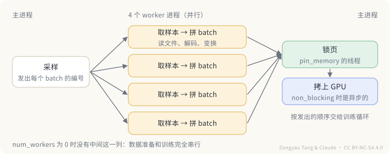

线索是：先确认 GPU 是不是真的在等数据 → 把一个 batch 从无到有的过程拆开，看它经过哪几站 → 每个参数分别调的是哪一站 → 最后一站（拷上 GPU）怎样和计算重叠 → 以及一个常被忽略的办法：很多预处理根本不必在训练时做。
第 2 部分 · PyTorch 执行栈2.4 数据供给
这一单元回答GPU 在等数据时，数据卡在哪一步？DataLoader 的每个参数在调什么？
承接 0.1 的“等数据”和 0.3 的锁页内存、多进程：这一单元把管道最前面的一段讲透。
- GPU 在等数据：先查数据管线
- 一个 batch 的诞生：采样、取样本、拼 batch、锁页、上 GPU
- 每个参数调的是管道的哪一站
- pin_memory 加 non_blocking：让“拷上 GPU”和计算重叠
- 最省事的优化：能提前做的预处理，就不要留到训练时做
讲解
1GPU 在等数据：先查数据管线
每一步训练前，CPU 要读数据、解码、做增强、拷到 GPU。只要这一串比 GPU 计算慢，GPU 就只能干等，profiler 时间线上会出现一段段空白。
0.1 讲过，训练的一步是一条串联的管道，前三步（读数据、预处理、拷上 GPU）由 CPU 完成。只要这三步合起来比 GPU 的计算慢，GPU 就会周期性地空下来。
三个层次的证据，从粗到细。
- *利用率曲线。* 每秒采样一次 GPU 利用率，呈锯齿状：一会儿接近 100%，一会儿掉到很低，周期和一步训练的时间吻合（0.2）。同时看 CPU：负责数据加载的那些进程把核占满了。
- *打点计时。* 在循环里量“取下一个 batch 花了多久”。供给充足时，这个时间接近零（batch 早就准备好了，只是从队列里拿出来）；供给不足时，它是几十上百毫秒，这段时间里训练循环在干等。
- *时间线。* profiler 导出的时间线上，GPU 那一行有规律地出现空白。空白对应的时间段里，主线程停在 DataLoader 的取数据调用上。
最干净的验证。 把同一个 batch 反复喂给模型，完全不读新数据。吞吐如果大幅上升，差的那部分就是数据供给的代价。这一单元最后的“排查”给出了完整的步骤。
为什么它这么常见。 两个趋势叠在一起：GPU 一代比一代快，一步计算的时间越来越短；而数据预处理是 CPU 上的 Python，速度几乎没变。于是同样的数据管线，换了新卡之后就可能从“够用”变成“瓶颈”。多卡时更明显：GPU 的数量翻了几倍，CPU 的核数没有跟着翻。
哪类任务容易中招。 输入需要在 CPU 上做重计算的：图像（解码 JPEG、增强）、视频、音频。语言模型的输入通常是提前分好词的整数，数据加载极轻，一般不是瓶颈；如果是，多半是把分词放在了训练时做（这一单元最后一节）。
打个比方像高速公路只开了一个收费口：路再宽，车也过不去。
所以 GPU 利用率忽高忽低时，先查数据加载：多开 DataLoader worker、用 pinned memory、提前预取，让数据准备和计算重叠起来。
出处Accelerate pin_memoryAccelerate num_workersAccelerate pinned memory 原理- 确认了是数据的问题，下一步要把“数据加载”这四个字拆开。
2一个 batch 的诞生：采样、取样本、拼 batch、锁页、上 GPU
主进程里的采样器决定这个 batch 包含哪些样本的编号，把编号发给一个 worker 进程；worker 逐个调用 Dataset 取出样本并做预处理，再用 collate 函数把它们拼成一个 batch；拼好的 batch 传回主进程，由一个线程把它放进锁页内存；训练循环拿到后，把它拷上 GPU。

各站分别在哪个进程里完成 设
DataLoader(dataset, batch_size=32, num_workers=4, pin_memory=True)。第一站：采样（主进程）。 采样器（Sampler）产生样本的编号序列：打乱时是一个随机排列，不打乱就是 0、1、2……每 32 个编号组成一组，就是一个 batch 的“订单”。多卡训练时用分布式采样器，让每个进程拿到互不重叠的编号。
第二站：取样本（worker 进程）。 主进程把订单放进一个队列，4 个 worker 进程各自从队列里取。拿到一组编号后，对每个编号调用
dataset[i]：读文件、解码、做变换。这是整个流程里最重的一步，也是用多进程的原因（0.3 讲过 GIL）。第三站：拼 batch（worker 进程）。 32 个样本取齐后，调用 collate 函数把它们叠成一个张量。默认的做法是
torch.stack；样本长度不一时（文本），要自己写 collate 函数来补齐。第四站：传回主进程。 worker 把拼好的 batch 放进结果队列。张量的数据放在共享内存里，队列里传的只是一个“句柄”，所以不需要把整个 batch 再拷贝一遍。
第五站：锁页（主进程里的一个线程）。 开了
pin_memory时，一个专门的线程从结果队列里取出 batch，把它拷进锁页内存（0.3 的源码导读讲的就是这个线程）。第六站：上 GPU（训练循环）。 你的代码里那一行
x = x.to(device)。worker 是提前干活的。 主进程不是等训练循环来要了才发订单，而是提前发出去一批。每个 worker 手里同时有几个订单在做（由
prefetch_factor控制，默认 2）。所以训练循环每次来取时，结果队列里通常已经有现成的 batch 在等。这是 0.1 里“用别的活把等待填满”：GPU 在算当前这个 batch 时，CPU 在准备后面的。顺序是有保证的。 4 个 worker 完成的先后是不确定的，但 DataLoader 会按订单发出的顺序把 batch 交给你。先做完的要等前面的。所以一个特别慢的样本（比如一个巨大的文件）会卡住它后面所有已经做好的 batch。
num_workers=0时。 没有 worker 进程，上面第二、三站都在主进程里、在训练循环调用时才现做。数据准备和训练完全串行，没有任何重叠。这是默认值，也是 GPU 利用率低最常见的单一原因。打个比方像餐厅的出菜流程：领班按订单分派（采样器），几个厨师各做一份（worker），装盘（collate），传菜口交接（进程间传递），端上桌之前放到保温台（锁页），最后上桌（拷上 GPU）。
所以“数据加载慢”不是一句话能解决的问题，要先分清慢在哪一站：是每个样本的预处理慢，是拼 batch 慢，是进程间传递慢，还是最后的拷贝慢。
- 六站清楚了，DataLoader 的那些参数就各有了位置。
3每个参数调的是管道的哪一站
num_workers 决定有多少进程并行地取样本和拼 batch；prefetch_factor 决定每个进程提前做几个；persistent_workers 决定每轮结束后进程是否保留；pin_memory 决定是否多一步锁页；batch_size 同时影响每一站的工作量。
num_workers：第二、三站的并行度。 这是最重要的一个。- 太少：CPU 没用满，取样本的速度跟不上 GPU。
- 合适：供给速度刚好超过 GPU 的消耗速度。
- 太多：超过了可用的 CPU 核数，进程之间互相抢；每个进程都占内存（各有一份 Python 解释器和导入的库，数据集对象也可能被复制）；如果瓶颈其实在存储的读取速度上，再多的进程也只是一起等磁盘。
多卡训练时要特别小心：每个训练进程都有自己的一组 worker。8 张卡、每个进程 16 个 worker，就是 128 个进程在抢 CPU，还要加上 0.3、6.2 讲过的那些需要 CPU 的线程（锁页线程、NCCL 的代理线程）。可用的核数要按“总核数 ÷ 卡数”来算。
prefetch_factor：第二到第四站的缓冲深度。 每个 worker 提前准备几个 batch。它不提高供给的平均速度，作用是吸收波动：偶尔有个 batch 准备得慢，缓冲里的存货可以顶上。调大它的代价是内存：缓冲里的 batch 数 = worker 数 × 这个值。persistent_workers：每轮开头的那段等待。 默认情况下，每一轮（epoch）结束时 worker 进程全部退出，下一轮开始时重新创建。创建进程、重新导入库、重新打开数据集都要时间，数据集小、轮数多时这段开销很可观。设为 True，进程一直活着。pin_memory：第五站。 多花一点 CPU 时间做锁页，换来第六站更快、并且可以异步（下一节）。在 GPU 上训练时一般都应该打开。batch_size：影响每一站。 batch 越大，每个 batch 要取的样本越多（第二站更慢），但 GPU 每步处理的也更多。数据管线关心的是“每秒多少个样本”，这个数和 batch 大小关系不大。drop_last。 丢掉最后一个不满的 batch。和速度的关系在于：大小不同的 batch 会让某些按固定形状优化过的路径（编译过的模型、2.1 的显存分配模式）多折腾一次。一个经验性的起点。
num_workers从“每张卡可用的 CPU 核数”的一半左右开始试，打开pin_memory和persistent_workers，其余保持默认。然后按下面“排查”里的办法实测，而不是靠猜。打个比方像调一条生产线：加工位（num_workers）、加大每个工位前的缓冲（prefetch_factor）、下班后不遣散工人（persistent_workers）、增加一道预处理（pin_memory）。每个旋钮只对它那一站起作用。
所以调参之前先知道瓶颈在哪一站。worker 已经够了还继续加，不但没用，还会因为进程之间抢 CPU 和内存而变慢。
- 最后一站是把 batch 拷上 GPU。这一步可以做得不占时间。
4pin_memory 加 non_blocking：让“拷上 GPU”和计算重叠
从锁页内存往 GPU 拷数据可以是异步的：CPU 发起拷贝后立刻返回，由硬件在后台完成。在 x.to(device, non_blocking=True) 之后，CPU 可以马上继续发后面的任务，拷贝和 GPU 上一个 batch 的收尾计算同时进行。两个条件缺一不可：数据在锁页内存里，并且调用时写了 non_blocking=True。
回顾 0.3。 普通内存里的数据要拷上 GPU，驱动得先把它复制到一块锁页的中转区，再用 DMA 传给 GPU。这个过程是同步的，CPU 要全程等待。数据本来就在锁页内存里时，可以直接 DMA，而且可以做成异步的。
四种组合。
pin_memory non_blocking 结果 否 否 两次拷贝，同步。CPU 等到拷完。 否 是 和上一行一样。数据不在锁页内存里，异步做不到，退回同步。 是 否 一次拷贝，但仍然同步。 是 是 一次拷贝，异步。CPU 立刻返回。 只有最后一种拿到了全部的好处。
异步之后发生了什么。
x = x.to(device, non_blocking=True)返回时，拷贝才刚开始。接下来你的代码调用model(x)，第一个用到x的 kernel 会排在这次拷贝的后面（它们在同一条 CUDA stream 上，按顺序执行，3.6 会细讲），所以不会读到没拷完的数据。你不需要自己等。省下的是 CPU 的时间：它不用停下来等这几毫秒，可以立刻去发模型前向的那些任务。对 CPU 发令本来就紧张的小模型（2.3），这一点更有价值。
效果有多大。 取决于拷贝在一步里占多少。文本模型的一个 batch 是一些整数编号，很小，拷贝本来就只要零点几毫秒，异步不异步差别不大。图像、视频模型的一个 batch 可能有几百 MB，按 PCIe 的带宽（5.1）要几十毫秒，这时就很可观了。0.2 讲的“把一步的时间拆开”能直接告诉你这一段占多少。
一个会让异步失效的写法。 在
.to(device, non_blocking=True)之后紧接着做一件需要“马上知道结果”的事，比如print(x.sum().item())。.item()要把数值取回 CPU，必须等前面的任务全部完成，异步就白做了。打个比方像寄快递时选“上门取件”：你下完单就可以去忙别的，快递员自己来拿。但前提是东西已经打包好放在门口（锁页）；如果还得你亲手交给他，你就只能等着。
所以只开 pin_memory 而不写 non_blocking，省了一次拷贝，但 CPU 仍然要等拷贝完成；只写 non_blocking 而数据不在锁页内存里，它会悄悄退回同步的拷贝。
- 前面几节都在想办法让数据准备得更快。还有一个更根本的问题：这些准备工作，一定要在训练的时候做吗？
5最省事的优化：能提前做的预处理，就不要留到训练时做
训练时每取一个样本都要做的工作，凡是结果每次都一样的（解码、分词、缩放到固定尺寸），都可以提前一次做完，把结果存成可以直接读的格式。训练时的数据加载就只剩“读一段连续的字节”，几乎不占 CPU。
把一个样本的预处理分成两类：
- 确定性的：每次结果都一样。读文件、解压、解码、分词、统一尺寸、归一化。
- 随机的：每次不一样，是训练的一部分。随机裁剪、翻转、加噪声这类数据增强。
第一类可以提前做。
语言模型的做法。 把整个语料提前分词，得到一个长长的整数序列，存成一个二进制文件。训练时用内存映射（memory map）打开它，每个样本就是文件里的一段连续的整数，“加载”一个 batch 只是读出几段再叠起来，耗时以微秒计。Karpathy 的 nanoGPT 和复现 GPT-2 的视频（1.5）用的就是这种做法。所以对语言模型，数据加载很少成为瓶颈；它成了瓶颈，多半是有人把分词放在了 Dataset 的
__getitem__里。图像和视频的做法。 解码 JPEG 是 CPU 密集的，而且通常还要做随机增强，没法全部提前。常见的折中：
- 提前把图片缩到接近训练用的尺寸再存，解码的工作量随像素数下降。
- 把很多小文件打包成少数大文件（7.4 会讲），顺序读比随机读快得多（0.3 的存储层次）。
- 把解码和增强搬到 GPU 上做（NVIDIA 的 DALI 是这个思路）。它把管道的这一段从“等数据”变成了“占用一点 GPU 算力”，在 CPU 核数相对 GPU 很少的机器上很有效（比如一台机器 8 张卡却只有 64 个核）。
为什么这比调参数有效。 调
num_workers是在“同样多的工作”上增加人手，上限是 CPU 的核数。提前预处理是把工作本身拿掉。前者最多快几倍，后者可以让这一段几乎消失。这是 0.1 的思想之一在最朴素的层面上的应用，2.6 里有一句话说的是同一件事：最快的计算，是不用做的计算。代价。 预处理后的数据通常比原始数据大（解码后的图像比 JPEG 大得多），要占存储；预处理的方式一变，就要重新生成。所以它适合已经定型的流程。
排查：证明瓶颈在数据，并找到 worker 数的拐点
第一步：证明是数据。 最干净的办法是把数据加载从循环里拿掉，看吞吐的上限是多少。
x, y = next(iter(loader)) # 只取一个 batch x, y = x.to(device), y.to(device) for step in range(200): # 反复喂同一个 batch loss = model(x, y) loss.backward(); opt.step(); opt.zero_grad()（记得预热、同步后再计时，0.2。）把这个吞吐记作“上限”，和正常训练的吞吐比：
- 两者接近：数据不是瓶颈，别在这上面花时间。
- 正常训练明显更低：差的那部分就是数据供给的代价。
第二步：单独测数据管线的速度。 反过来，把模型拿掉，只跑数据：
t0 = time.perf_counter(); n = 0 for x, y in loader: n += len(x) if n >= 20000: break print(n / (time.perf_counter() - t0), "样本/秒")这个数要明显高于第一步的“上限”，数据才供得上。
第三步：扫 worker 数。 对
num_workers取 0、2、4、8、16、32，各跑一次第二步，画出“样本/秒”随 worker 数的曲线。典型的形状是先近似线性上升，然后变平，再往后可能下降。- 取曲线刚变平的那个点，再多留一点余量。
- 如果曲线很早就平了，而且平台值仍低于模型的“上限”：加进程已经没用，瓶颈在别处。看 CPU 是不是所有核都满了（是：预处理太重，考虑提前做或搬上 GPU）；看磁盘或网络存储的读取速度是不是到头了（是：换更快的存储，或者把数据拷到本地盘）。
第四步：再放回一起验证。 用选定的 worker 数跑正常训练，吞吐应该接近第一步的“上限”。同时用
htop看一眼：主训练进程所在的那个核不应该是 100%（那是 2.3 的框架开销问题），worker 进程应该大致均匀地忙。多卡时重做一遍。 8 张卡的最优 worker 数不是单卡的值：CPU 要分给 8 个训练进程。7.1 的排查里，“把通信拿掉后每个进程仍然慢”指向的就是这里。
打个比方像餐厅的备菜：洗菜、切菜、熬高汤都在开门前做好。客人点单时只剩下锅这一步。没有哪家餐厅是客人点了才开始洗菜的。
所以遇到数据瓶颈，先问“这些工作必须每次都做吗”，再去调 worker 数。大模型的训练几乎都是这样做的：文本提前分好词，训练时只读编号。
串起来
GPU 时忙时闲，先怀疑数据供给。一个 batch 要经过采样、取样本、拼 batch、锁页、拷上 GPU 五站，num_workers、prefetch_factor、pin_memory 等参数各调其中一站。pin_memory 加 non_blocking 让最后一站和计算重叠。最省事的优化是把预处理提前做完，训练时只读现成的结果。
考考自己
不看讲解，用自己的话讲一遍。
- 怎样判断 GPU 是不是在等数据？在时间线上它长什么样？
- 从 Dataset 里的一个样本到 GPU 上的一个 batch，中间经过哪几站？各自在哪个进程里完成？
- num_workers、prefetch_factor、persistent_workers、pin_memory 各自影响数据管线的哪一段？worker 数为什么不是越多越好？
- 为什么 pin_memory=True 和 non_blocking=True 要一起用？各自单独使用时效果如何？
- 哪些数据预处理可以提前离线完成？这样做为什么比调 DataLoader 参数更有效？
术语
- sampler
- 采样器
- collate
- 把样本拼成 batch
- worker
- 加载进程
- prefetch
- 预取
- data pipeline
- 数据管线